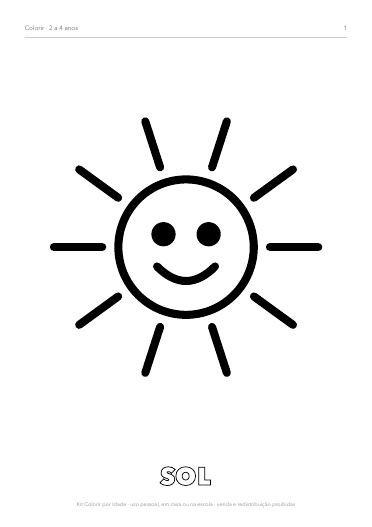
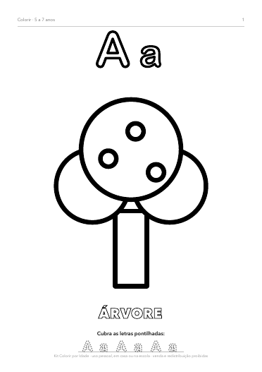
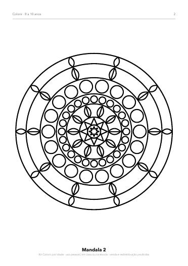
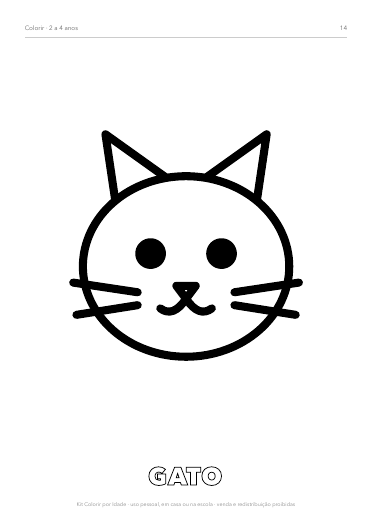
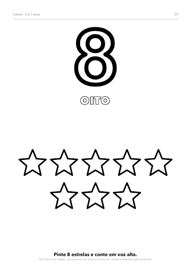
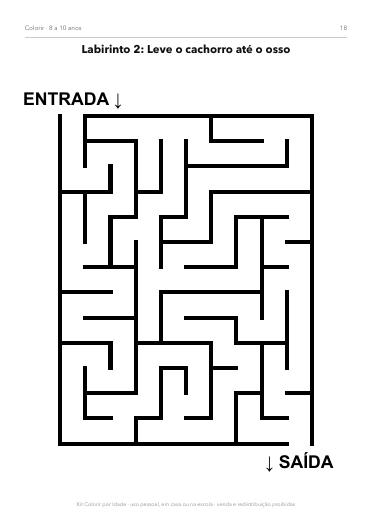

3 livros em um kit: desenhos grandes para os pequenos, ABC e 123 para quem está aprendendo a ler e mandalas e labirintos para os maiores. São 98 páginas para imprimir quantas vezes quiser.
QUERO O KIT POR R$ 19,90


Este kit separa os desenhos pela fase da criança. E como é PDF, você imprime a página favorita de novo sempre que quiser.
26 desenhos grandes, de linha grossa, com o nome escrito: sol, gato, peixe, carro, urso, foguete e muito mais. Feito para mãozinhas que estão aprendendo a segurar o giz.

As 26 letras (maiúscula, minúscula, desenho e linha pontilhada para cobrir) e os números de 0 a 10 com objetos para pintar e contar.

12 mandalas, 4 padrões para pintar e 10 labirintos do fácil ao gigante, com as soluções no final.

Não. É um produto digital: você recebe 3 arquivos PDF por e-mail logo após o pagamento e imprime em casa ou numa papelaria.
Não. As páginas são em preto e branco, feitas justamente para colorir. Qualquer impressora comum serve.
Serve. Como você leva os 3 livros, pode começar pelo mais fácil e ir passando para o próximo conforme ele cresce.
Pode. Professores podem imprimir para os alunos à vontade. Só não é permitido revender ou compartilhar o arquivo.
Dá, em qualquer app de desenho que abra PDF ou imagem. Mas no papel é melhor para a coordenação motora.